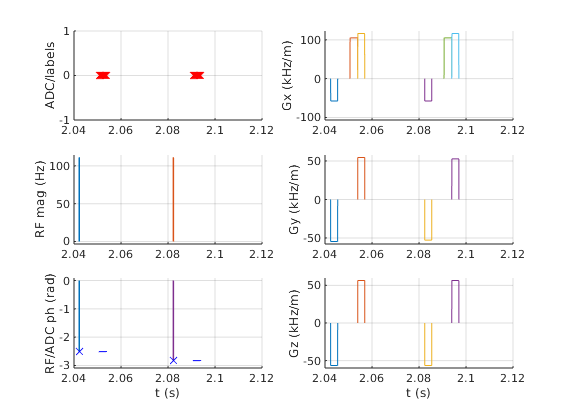

Contents
fov=[190e-3 190e-3 190e-3];
Nx=64; Ny=Nx; Nz=Nx;
Tread=3.2e-3;
Tpre=3e-3;
riseTime=400e-6;
Ndummy=50;
sys=mr.opts('maxGrad',20,'gradUnit','mT/m','riseTime',riseTime,...
'rfRingdownTime', 30e-6, 'rfDeadTime', 100e-6);
seq=mr.Sequence(sys);
[rf, rfDelay] = mr.makeBlockPulse(8*pi/180,sys,'Duration',0.2e-3);
deltak=1./fov;
gx = mr.makeTrapezoid('x',sys,'FlatArea',Nx*deltak(1),'FlatTime',Tread);
adc = mr.makeAdc(Nx,'Duration',gx.flatTime,'Delay',gx.riseTime);
gxPre = mr.makeTrapezoid('x',sys,'Area',-gx.area/2,'Duration',Tpre);
gxSpoil = mr.makeTrapezoid('x',sys,'Area',gx.area,'Duration',Tpre);
areaY = ((0:Ny-1)-Ny/2)*deltak(2);
areaZ = ((0:Nz-1)-Nz/2)*deltak(3);
TE=10e-3;
TR=40e-3;
delayTE = ceil((TE - mr.calcDuration(rf) + mr.calcRfCenter(rf) + rf.delay - mr.calcDuration(gxPre) ...
- mr.calcDuration(gx)/2)/seq.gradRasterTime)*seq.gradRasterTime;
delayTR = ceil((TR - mr.calcDuration(rf) - mr.calcDuration(gxPre) ...
- mr.calcDuration(gx) - mr.calcDuration(gxSpoil) - delayTE)/seq.gradRasterTime)*seq.gradRasterTime;
dTE=mr.makeDelay(delayTE);
dTR=mr.makeDelay(delayTR);
clear gyPre gyReph;
for iY=1:Ny
gyPre(iY) = mr.makeTrapezoid('y','Area',areaY(iY),'Duration',Tpre);
gyReph(iY) = mr.makeTrapezoid('y','Area',-areaY(iY),'Duration',Tpre);
end
gxPre.id=seq.registerGradEvent(gxPre);
gx.id=seq.registerGradEvent(gx);
gxSpoil.id=seq.registerGradEvent(gxSpoil);
[~, rf.shapeIDs]=seq.registerRfEvent(rf);
for iY=1:Ny
gyPre(iY).id = seq.registerGradEvent(gyPre(iY));
gyReph(iY).id = seq.registerGradEvent(gyReph(iY));
end
for iY=1:Ndummy
rf.phaseOffset = mod(117*(iY^2+iY+2)*pi/180,2*pi);
seq.addBlock(rf,rfDelay);
seq.addBlock(gxPre,gyPre(floor(Ny/2)));
seq.addBlock(dTE);
seq.addBlock(gx);
seq.addBlock(gyReph(floor(Ny/2)),gxSpoil);
seq.addBlock(dTR);
end
for iZ=1:Nz
gzPre = mr.makeTrapezoid('z','Area',areaZ(iZ),'Duration',Tpre);
gzReph = mr.makeTrapezoid('z','Area',-areaZ(iZ),'Duration',Tpre);
gzPre.id = seq.registerGradEvent(gzPre);
gzReph.id = seq.registerGradEvent(gzReph);
for iY=1:Ny
rf.phaseOffset = mod(117*(iY^2+iY+2)*pi/180,2*pi);
adc.phaseOffset = rf.phaseOffset;
seq.addBlock(rf,rfDelay);
seq.addBlock(gxPre,gyPre(iY),gzPre);
seq.addBlock(dTE);
seq.addBlock(gx,adc);
seq.addBlock(gyReph(iY),gzReph,gxSpoil);
seq.addBlock(dTR)
end
end
fprintf('Sequence ready\n');
[ok, error_report]=seq.checkTiming;
if (ok)
fprintf('Timing check passed successfully\n');
else
fprintf('Timing check failed! Error listing follows:\n');
fprintf([error_report{:}]);
fprintf('\n');
end
seq.plot('TimeRange',[Ndummy+1 Ndummy+3]*TR)
seq.setDefinition('FOV', fov);
seq.setDefinition('Name', 'gre3d');
seq.write('gre3d.seq',false);
if Nx<=32
tic;
[kfa,ta,kf]=seq.calculateKspacePP();
toc
figure;plot3(kf(1,:),kf(2,:),kf(3,:));
hold on;plot3(kfa(1,:),kfa(2,:),kfa(3,:),'r.');
end
return
Sequence ready
Timing check passed successfully

create a smoothly rotating plot
if Nx<=16
figure;plot3(kf(1,:),kf(2,:),kf(3,:));
hold on;plot3(kfa(1,:),kfa(2,:),kfa(3,:),'r.');
kabsmax=max(abs(kf)')';
kxyabsmax=max(kabsmax(1:2));
kxyzabsmax=max(kabsmax);
axis([-kxyzabsmax kxyzabsmax -kxyzabsmax kxyzabsmax -kxyzabsmax kxyzabsmax])
[caz,cel] = view;
for caz_add=0:1:359
view(caz+caz_add,cel);
drawnow;
end
end
create a smoothly rotating plot (rotated to read along z)
if Nx<=16
figure;plot3(kf(2,:),-kf(3,:),kf(1,:));
hold on;plot3(kfa(2,:),-kfa(3,:),kfa(1,:),'r.');
set(gca,'visible','off');
set(gca, 'CameraViewAngle',get(gca, 'CameraViewAngle'));
kabsmax=max(abs(kf)')';
kxyabsmax=max(kabsmax(1:2));
kxyzabsmax=max(kabsmax);
s1=1.2;
axis([ -kabsmax(2)*s1 kabsmax(2)*s1 -kabsmax(2)*s1 kabsmax(2)*s1 min(kf(1,:)) kabsmax(1)]);
[caz,cel] = view;
folder='kspace3d';
mkdir(folder);
for caz_add=0:1:359
view(caz+caz_add,cel);
drawnow;
print( '-r100', '-dpng', [folder '/frame_' num2str(caz_add,'%03d') '.png']);
end
end